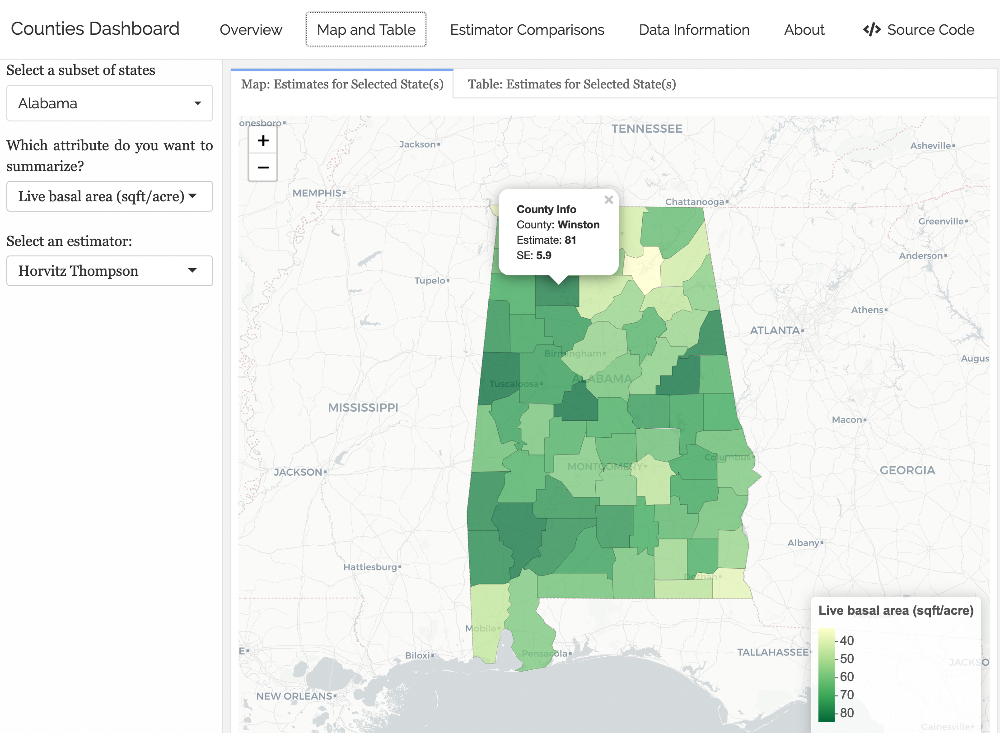
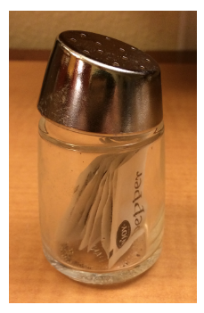
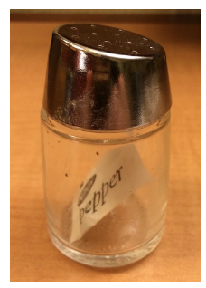
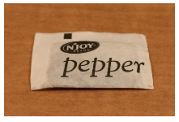
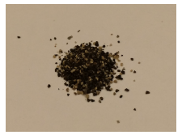

04:00

Data Wrangling and Types
Grayson White
Math 241
Week 4 | Spring 2026
Announcements
Welcome to the newly admitted students!
Office hours time change going forward.
Week 4 Goals
Mon Lecture
Different types of data in
R- atomic and generic vectors
- subsetting objects
Talk more about logical statements
More practice with
dplyrverbs and data wrangling
Wed Lecture
- Joining multiple data frames
- “Tidy” data
- Reshaping data frames
Looking Ahead to Project 1
Goal: Create interactive dashboards with shinydashboard and flexdashboard.

What We Need First
Need a robust understanding of wrangling data frames.
Need to explore more data objects in
R.Need to learn how to interact with and wrangle these data objects.
dplyr review
Data: Census 2000 (from openintro)
# A tibble: 5 × 8
census_year state_fips_code total_family_income age sex race_general
<int> <fct> <int> <int> <fct> <fct>
1 2000 Florida 14550 44 Male Two major races
2 2000 Florida 22800 20 Female White
3 2000 Florida 0 20 Male Black
4 2000 Florida 23000 6 Female White
5 2000 Florida 48000 55 Male White
# ℹ 2 more variables: marital_status <fct>, total_personal_income <int>select()
Use select() to grab only the variables/columns we want
# A tibble: 500 × 4
census_year age sex marital_status
<int> <int> <fct> <fct>
1 2000 44 Male Married/spouse present
2 2000 20 Female Never married/single
3 2000 20 Male Never married/single
4 2000 6 Female Never married/single
5 2000 55 Male Married/spouse present
6 2000 43 Female Married/spouse present
7 2000 60 Female Married/spouse present
8 2000 47 Female Married/spouse present
9 2000 54 Female Married/spouse present
10 2000 58 Female Widowed
# ℹ 490 more rowsselect()
Or you can add minus signs to delete columns from the dataset.
# A tibble: 500 × 4
state_fips_code total_family_income race_general total_personal_income
<fct> <int> <fct> <int>
1 Florida 14550 Two major races 0
2 Florida 22800 White 13000
3 Florida 0 Black 20000
4 Florida 23000 White NA
5 Florida 48000 White 36000
6 Florida 74000 White 27000
7 Florida 23000 White 11800
8 Florida 74000 White 48000
9 Florida 60000 Black 40000
10 Florida 14600 White 14600
# ℹ 490 more rowsmutate()
mutate() can add new columns that are functions of existing columns:
# A tibble: 500 × 5
census_year state_fips_code total_family_income age age_decade
<int> <fct> <int> <int> <dbl>
1 2000 Florida 14550 44 4
2 2000 Florida 22800 20 2
3 2000 Florida 0 20 2
4 2000 Florida 23000 6 0
5 2000 Florida 48000 55 5
6 2000 Florida 74000 43 4
7 2000 Florida 23000 60 6
8 2000 Florida 74000 47 4
9 2000 Florida 60000 54 5
10 2000 Florida 14600 58 5
# ℹ 490 more rows- New operator:
%/%does integer division
filter()
filter() only keeps rows/observations that match certain criteria
# A tibble: 80 × 8
census_year state_fips_code total_family_income age sex race_general
<int> <fct> <int> <int> <fct> <fct>
1 2000 Florida 22800 20 Female White
2 2000 Florida 23000 6 Female White
3 2000 Florida 103700 8 Female White
4 2000 Florida 70700 17 Female White
5 2000 Florida 118100 18 Female White
6 2000 New York 68020 2 Female Chinese
7 2000 New York 50400 21 Female White
8 2000 New York 65000 1 Female White
9 2000 New York 62900 17 Female Black
10 2000 New York 168200 6 Female White
# ℹ 70 more rows
# ℹ 2 more variables: marital_status <fct>, total_personal_income <int>arrange()
arrange() sorts the rows by a certain variable (or set of variables)
# A tibble: 500 × 8
census_year state_fips_code total_family_income age sex race_general
<int> <fct> <int> <int> <fct> <fct>
1 2000 Texas 9200 0 Male Black
2 2000 Florida 48000 1 Male White
3 2000 New York 13000 1 Male White
4 2000 New York 65000 1 Female White
5 2000 Michigan 57400 1 Female White
6 2000 Pennsylvania 27150 1 Male White
7 2000 Florida 50090 2 Male White
8 2000 Florida 6000 2 Male White
9 2000 New York 68020 2 Female Chinese
10 2000 New York 17000 2 Male Two major races
# ℹ 490 more rows
# ℹ 2 more variables: marital_status <fct>, total_personal_income <int>arrange()
Can do descending order too with the desc() function!
# A tibble: 500 × 8
census_year state_fips_code total_family_income age sex race_general
<int> <fct> <int> <int> <fct> <fct>
1 2000 Louisiana 8100 93 Female White
2 2000 Illinois NA 87 Female White
3 2000 West Virginia 0 87 Male White
4 2000 Delaware 46200 85 Female White
5 2000 Indiana 8000 85 Male Black
6 2000 New York 15570 83 Male White
7 2000 New York 8800 82 Female White
8 2000 Massachusetts 34300 82 Female White
9 2000 New York 55000 81 Male White
10 2000 Minnesota 0 81 Female White
# ℹ 490 more rows
# ℹ 2 more variables: marital_status <fct>, total_personal_income <int>arrange()
Can arrange by multiple variables too:
# A tibble: 500 × 8
census_year state_fips_code total_family_income age sex race_general
<int> <fct> <int> <int> <fct> <fct>
1 2000 Texas 9200 0 Male Black
2 2000 New York 65000 1 Female White
3 2000 Michigan 57400 1 Female White
4 2000 Florida 48000 1 Male White
5 2000 New York 13000 1 Male White
6 2000 Pennsylvania 27150 1 Male White
7 2000 New York 68020 2 Female Chinese
8 2000 Maryland 95500 2 Female White
9 2000 Oregon 9300 2 Female White
10 2000 Michigan 20340 2 Female White
# ℹ 490 more rows
# ℹ 2 more variables: marital_status <fct>, total_personal_income <int>summarize()
summarize() computes summary statistics and collapses data into row(s) that show those summary statistics
# A tibble: 1 × 3
mean_income sd_income size
<dbl> <dbl> <int>
1 57411. 70732. 500- Can compute multiple measures
group_by() + summarize()
Add group_by() to summarize() to calculate summary statistics by specified grouping variable(s)
# A tibble: 14 × 4
state_fips_code mean_income sd_income size
<fct> <dbl> <dbl> <int>
1 Washington 20079. 12980. 11
2 Louisiana 34899. 42097. 12
3 Ohio 40748. 26796. 23
4 Indiana 46738. 32291. 17
5 Florida 46848. 31787. 39
6 Pennsylvania 51685 44823. 26
7 Illinois 55972. 42426. 21
8 New York 57064. 44793. 43
9 Texas 58240. 72468. 37
10 Michigan 59160 27403. 14
11 Massachusetts 59506. 38984. 12
12 Georgia 60488. 52199. 18
13 California 73142. 69338. 62
14 New Jersey 77498 80288. 15Tip: count()
count() is a short-cut for group_by() + summarize(n())
group_by() + mutate()
Adding group_by() allows functions (e.g., sum()) to operate on variables by specified grouping variable(s)
Let’s start with this summary dataset:
# A tibble: 12 × 3
marital_status sex n
<fct> <fct> <int>
1 Divorced Female 21
2 Divorced Male 17
3 Married/spouse absent Female 5
4 Married/spouse absent Male 9
5 Married/spouse present Female 92
6 Married/spouse present Male 100
7 Never married/single Female 93
8 Never married/single Male 129
9 Separated Female 1
10 Separated Male 2
11 Widowed Female 20
12 Widowed Male 11group_by() + mutate()
# A tibble: 12 × 4
marital_status sex n p
<fct> <fct> <int> <dbl>
1 Divorced Female 21 0.042
2 Divorced Male 17 0.034
3 Married/spouse absent Female 5 0.01
4 Married/spouse absent Male 9 0.018
5 Married/spouse present Female 92 0.184
6 Married/spouse present Male 100 0.2
7 Never married/single Female 93 0.186
8 Never married/single Male 129 0.258
9 Separated Female 1 0.002
10 Separated Male 2 0.004
11 Widowed Female 20 0.04
12 Widowed Male 11 0.022Q: What is the denominator for the proportions in the new p variable?
group_by() + mutate()
# A tibble: 12 × 4
# Groups: marital_status [6]
marital_status sex n p
<fct> <fct> <int> <dbl>
1 Divorced Female 21 0.553
2 Divorced Male 17 0.447
3 Married/spouse absent Female 5 0.357
4 Married/spouse absent Male 9 0.643
5 Married/spouse present Female 92 0.479
6 Married/spouse present Male 100 0.521
7 Never married/single Female 93 0.419
8 Never married/single Male 129 0.581
9 Separated Female 1 0.333
10 Separated Male 2 0.667
11 Widowed Female 20 0.645
12 Widowed Male 11 0.355Q: Now what is the denominator for the proportions in the new p variable?
Now: type of data objects
Math 241 R Data Objects So Far:
Data frames:
[1] "spec_tbl_df" "tbl_df" "tbl" "data.frame" (Atomic) Vectors:
- The last two are both examples of what are called atomic vectors.
R Objects: Vectors
- Vectors are the fundamental building blocks of data in
R.- Each column in a data frame is an atomic vector!
- Come in 2 flavors!
- Flavor 1: Atomic vectors
- Homogeneous collections of the same type.
- Confusingly, people usually just call these vectors.
- Flavor 2: Generic vectors
- Heterogeneous collections of any type of
Robjects. - Commonly called lists.
- Heterogeneous collections of any type of
Deep Dive into (atomic) vectors
Let’s explore the common types and how to interact with them.
This will allow us to use vectors to do useful things,
Understand logical statements and
dplyrmore robustly, anddebug our code more effectively!
Flavors of Atomic Vectors
Logical: TRUEs and FALSEs
Numeric: Integers, real numbers (double-precision floating point numbers)
Factors versus Characters
Character: Strings (contains 1 or more characters)
- If you want to read more about this rabbit hole, go here.
Concatenation
Atomic vectors are created and combined with c().
Checking Type
Checking Type
Type Coercion
R will often change the type of a vector with no warning.
Usually it makes the smart choice.
Operator Coercion
Functions and operators (like
+,-,*, etc.) will often try to convert a vector to an appropriate type.Once we are writing our own functions, we will consider building in tests to ensure the user provided the correct type.
Changing Type
- We can also explicitly change the type, for example:
Vectorized
R is built to work with vectors.
Many operations are vectorized: will happen component-wise when given a vector as input.
Vectorized: Caution
- We need to be careful with vectorization!
Recycling
- R recycles vectors if they are not the necessary length.
- Notice we got NO error but that wasn’t what we wanted.
Indexing a Vector
So what about generic vectors/lists?
Recall they are heterogeneous collections of any type of R objects.
Lists
Think of these as the most general way to store things.
groceries <- list()
groceries$new_seasons <- c("apples", "goat cheese", "pizza slice")
groceries$safeway <- c("black beans", "tortillas")
groceries$peoples_food_coop <- c("squash", "tea", "fresh greens")
groceries$budget <- data.frame(stores = c("new_seasons", "safeway", "peoples_food_coop"),
fund = c(100, 25, 200))
class(groceries)[1] "list"Lists
Notice the nested structure
$groceries
$groceries$new_seasons
[1] "apples" "goat cheese" "pizza slice"
$groceries$safeway
[1] "black beans" "tortillas"
$groceries$peoples_food_coop
[1] "squash" "tea" "fresh greens"
$groceries$budget
stores fund
1 new_seasons 100
2 safeway 25
3 peoples_food_coop 200
$holidays
[1] "Valentine's" "President's"Indexing lists
Distinguishing between [ ] and [[]]
[ ] versus [[ ]]
x is a list: the pepper shaker containing packets of pepper.

[ ] versus [[ ]]
x[1] is a pepper shaker containing the first packet of pepper.

[ ] versus [[ ]]
x[2] is what?
[ ] versus [[ ]]
x[[1]] is what?

[ ] versus [[ ]]
x[[1]][[1]] is what?

Data Frames
Let’s relate list()s to our favorite R object: data.frame()s!
data.frame()s arelist()s.- Each variable of a
data.frame()is an atomicvector(). - The
vector()s all have the same length but not necessary the same class.
Data Frames
Data Frames
Thoughts about R data objects
We can create and interact with (atomic) vectors and lists (generic vectors).
When writing and debugging code, it is a good idea to check the
class()of an object.R will sometimes change the type of an object without telling us (but based on our actions).
Vectorization makes
Rcode speedy but also can cause you to do something you didn’t mean to do.While we will primarily interact with
vector()s anddata.frame()s, we will sometimes needlist()s.
Next time
- Joining, reshaping, and tidying data!
Next Week
- Spatial data in
R